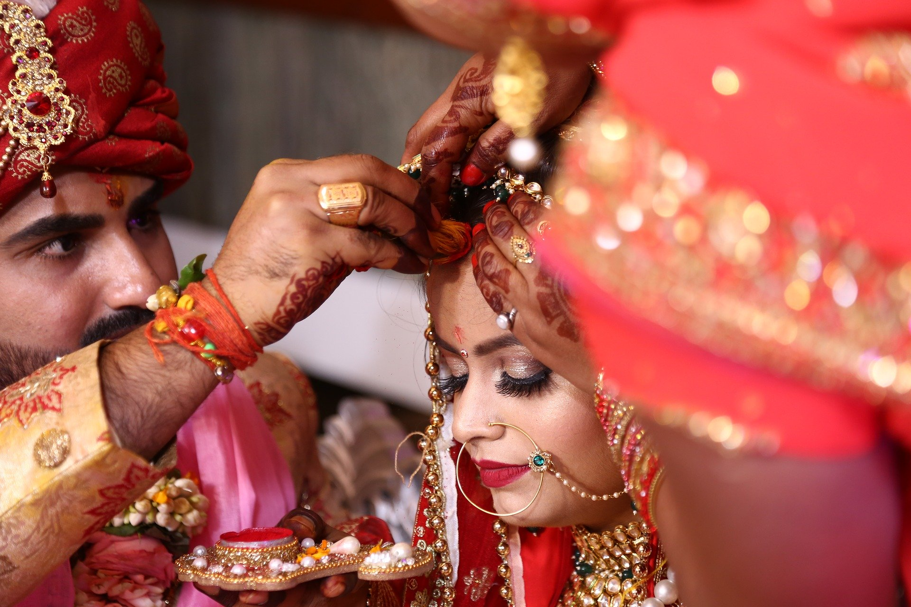
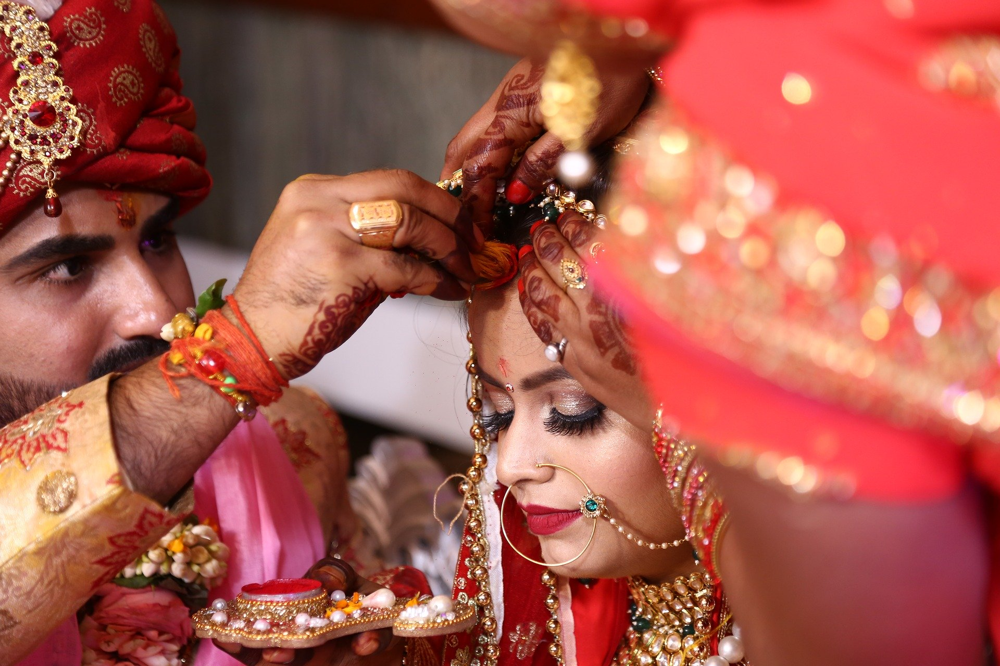

Wedding Photography
Marriage is a union between individual people. It is like a contract. Sometimes people also call this matrimony. The fact of being married is called wedlock. Very often, people celebrate that they are getting married. The ceremony is usually called a wedding. In most of the world, this is a union between a man and a woman (who become husband and wife). However, such ceremonies can occur between same-sex couples.